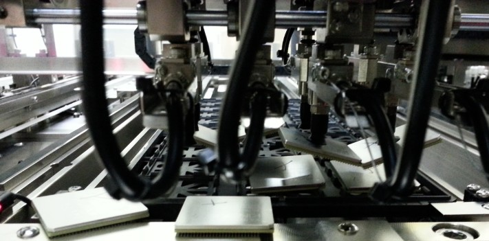
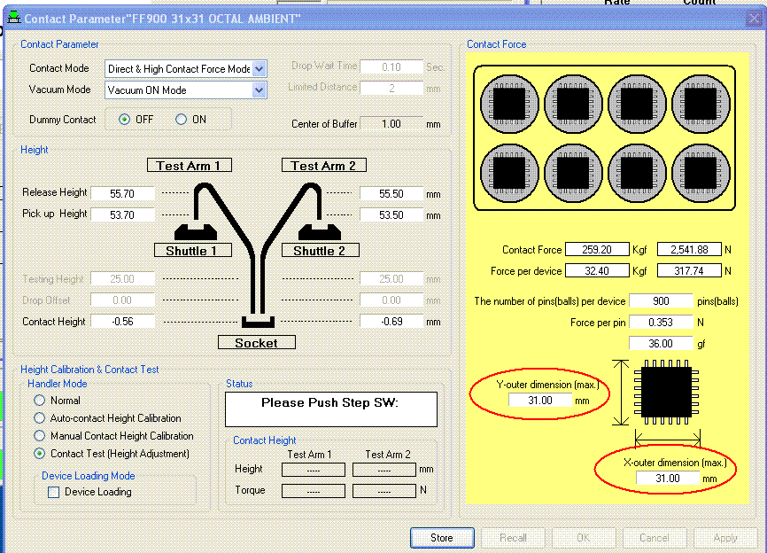

Service History
Subject: Input & Output Hand Close pitch and caused device drop
Handler Model: NX1032XS (S/N: 182347)
Controller: RC520 (S/N: 00504), DUBOX030 (S/N: 100004), PSUNT353 (P892)
Date: 4 Oct 2012 HMI 1.0 ( FD12S163), (Recovery DVD Ver 1.0, FD12S164)
Symptom
Package: FF900 31x31 Octal (Test site: X-pitch 40mm, Y-pitch 75.15mm)
Input Hands pick device from tray, because it close pitch, 31x31 devices will hit each other.
Similarly for Output Hands, because it close pitch, device will hit each other.

Action
According to EPSON, need to change the setup package size of device according to actual device that is 31mm x 31mm in the Contact page in [DeviceSet]->[Contact] - "Contact parameters".
(The setup file for FF900 31x31 Octal was created from EPSON default setup file CSP0505 which set Y-outer dimension as 5mm, X-outer dimension 5mm)
As the package size was set to 5mm by 5mm, this caused the Input & Output Hands to Open/Close to meet the requirements of the 5mm by 5mm device.
Need to set Y-outer dimension is 31 mm
Need to set X-outer dimension is 31 mm
After that the Input & Output Hand pitch will Open/Close correctly.
The number Input & Output hands to use will automatically be selected.

Cause
The outer dimensions of the actual device was not set correctly in the Contact page in [DeviceSet]->[Contact] for the [Contact parameters].